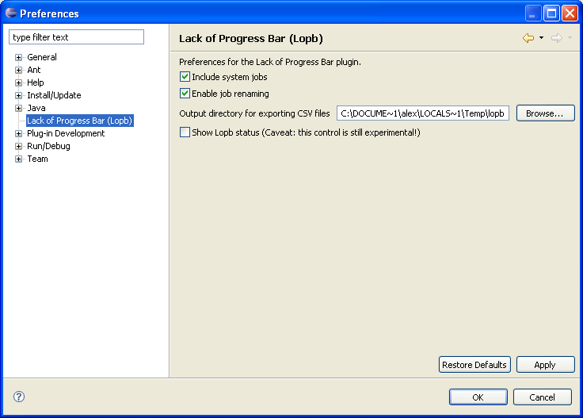

The user may override certain default behavior for Lopb by changing settings in the Lopb Preferences page. To access the page, click Window > Preferences and then select Lack of Progress Bar (Lopb).

The preferences that can be modified are described below.
Table 4.4. Lopb Preferences
| Preference | Description |
|---|---|
| Include system jobs | When checked, system jobs will be monitored by Lopb; otherwise they will be ignored. |
| Enable job renaming | When checked, Job alias will be editable (first column) in the Lopb Report view. |
| Output directory for exporting CSV files | When exporting CSV files, this is the base directory for all output files. |
| Show Lopb status | When checked, the Lopb status indicator will be shown in the Eclipse workbench window trim. |